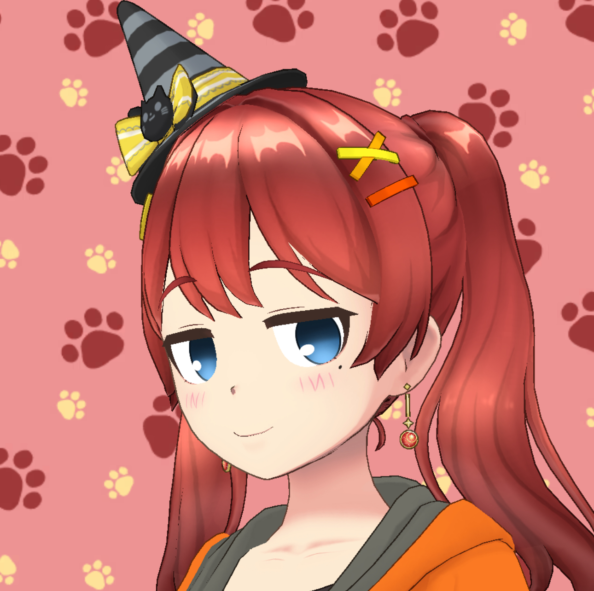

はじめまして。日々、小児科の診療に携わりながら、医療を通じて社会と人のつながりを考えています。 子どもたちの健やかな成長を支えることはもちろんのこと、ご家族が安心して相談できる場をつくることを大切にしています。
診療の現場では、ひとりひとりの背景や想いに耳を傾けながら、わかりやすく丁寧な医療を心がけています。 また、医療がより身近で、誰にとっても理解しやすいものになるよう、情報発信にも取り組んでいます。 医療は「治す」だけでなく、「伝える」ことも大切だと感じています。
クリニックの運営を通して、医療を持続的に支える仕組みづくりや、働く環境の改善にも関心を持っています。 経営や投資の世界にも視野を広げ、社会の動きや経済の仕組みを学びながら、より良い医療体制を築くためのヒントを探っています。
休日には、静かに本を読んだり、コーヒーを淹れて過ごす時間を大切にしています。 アートやデザインにも興味があり、日常のなかにある「美しさ」や「余白」に心を惹かれます。 そうした感覚が、医療や人との関わりにも豊かさをもたらしてくれると感じています。
このブログでは、日々の診療を通して感じたことや、医療・経営・社会についての考察を記しています。 専門的な内容もありますが、できるだけ平易な言葉で、読む人の生活に少しでも役立つ視点を届けたいと思っています。 穏やかな時間の中で、思考を整理し、次につながるヒントを見つける場所になれば幸いです。
※ 個人を特定できる情報は掲載していません。
以下の文章（自己紹介）をもとに作られた小さなクイズです。気軽にお試しください。